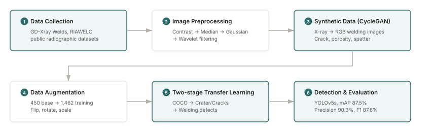

Welding defect detection from synthetic images
Real welding defect photographs are hard to get, so I built training data from public X-ray radiographs: CycleGAN translated them into camera-style RGB images, and a YOLOv5s detector was trained on them with two-stage transfer learning.
problem
Welding defects can degrade a product or, in severe cases, make it unsafe. Inspection today relies on visual checks and non-destructive testing, which are slow, costly and dependent on the individual inspector's experience.
Deep learning could automate detection, but it needs a large, well-labelled dataset, and for welding there is none in public: real defect images are restricted for security reasons and expensive to collect on the shop floor. Public X-ray radiographs of welds do exist, with labelled defects, but they are grayscale and look nothing like the RGB camera images used in inspection.
Since the real data could not be collected, the project manufactured a stand-in. The radiographs carry the geometry of real defects; the task was to move them into the visual domain of camera images and then train a detector that could cope with the remaining gap. Much of the work is therefore the data pipeline rather than the detector itself.
my part
First author: research design and all experiments, including the preprocessing chain, CycleGAN data generation, augmentation, and YOLOv5s training and evaluation.
approach

1 · Data
Weld radiographs came from two public datasets, GD-Xray Welds and RIAWELC. They contain labelled defects and serve as a stand-in for defect geometry.
2 · Preprocessing
Before translation, each radiograph went through contrast enhancement to bring out structure, then median filtering (edge-preserving noise removal), Gaussian filtering (overall noise reduction) and wavelet filtering (frequency-level refinement). The chain was chosen by comparing the outputs visually: contrast first, so faint structure survives, then the filters to remove noise that would otherwise confuse the generator.

original

contrast

median

Gaussian

wavelet

all applied
Each step on its own, and all four combined (the input to CycleGAN).
3 · Synthetic images with CycleGAN
CycleGAN translated the preprocessed radiographs into RGB images that look like camera photographs of welds, for three defect classes: crack, porosity and spatter. CycleGAN learns from unpaired examples, which mattered because no matched radiograph–photograph pairs exist.

crack

porosity

spatter
X-ray radiograph (left of each pair) and the CycleGAN output (right).
4 · Augmentation
The 450 base CycleGAN images were expanded with flips, rotations and scaling to 1,462 training images and 318 test images. All images are 256×256.
5 · Two-stage transfer learning
YOLOv5s was trained in three steps: pre-training on COCO for general visual features; intermediate fine-tuning on two datasets with similar shapes, a lunar crater dataset (circular depressions, like porosity) and a building-defects dataset of concrete cracks (like weld cracks); and final fine-tuning on the synthetic welding images. The intermediate stage gives the model a stepping stone between general images and welding defects.
The idea is cross-domain visual analogy: find shapes outside welding that look like welding defects, and let the model learn them before it sees the target domain. Jumping straight from COCO to synthetic welds asks the model to cross a large gap in one step; the intermediate datasets split that gap in two.
6 · Evaluation
Each training condition was evaluated with mAP at IoU 0.5, precision, recall and F1 on the same held-out synthetic test set, so the conditions are compared on equal terms.
results
All metrics are on a held-out set of 318 CycleGAN-generated images, not real welding photographs.
| training | mAP@0.5 | precision | recall | F1 |
|---|---|---|---|---|
| from scratch | 78.4 | – | – | – |
| COCO transfer | 85.2 | – | – | – |
| two-stage | 87.5 | 90.3 | 85.1 | 87.6 |
Percentages. Two-stage = COCO → crater/crack → welding. – = not reported on the original project page; see the paper.
Two-stage transfer learning gave the best result, 9.1 percentage points of mAP@0.5 above training from scratch. Experiments ran on NVIDIA RTX A6000 GPUs.

In the examples above, the COCO-only model mislabels a spatter region as a crack and draws low-confidence crack boxes over undamaged areas, while the two-stage model labels each defect with its own class. These are illustrations, not a measured error analysis.
The detector was trained without real defect photographs; validation on real images was out of scope.
limitations
- The test set is synthetic. Every metric above measures performance on CycleGAN images, so it says nothing yet about real welds. Real-image validation, and measuring the gap between synthetic and real images, is the next step.
- There is no ablation isolating CycleGAN's contribution, and the preprocessing chain was chosen by visual comparison rather than by a metric.
- The work was done without input from welding inspectors, so the metrics are technical, not tied to an inspection workflow.
links
Yuna Sim, Jewon Kang. "Welding defect detection using synthetic data and object recognition algorithms." IPIU, Feb 2024.